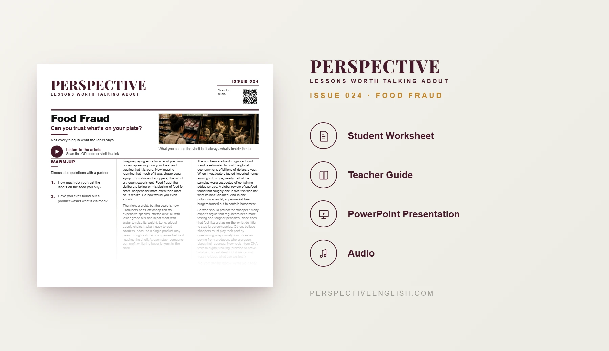

ISSUE 024
Food Fraud ESL Lesson
Can you trust what's on your plate?
A ready-to-teach C1–C2 ESL lesson exploring food fraud, global supply chains, misleading labels, consumer trust and regulation, with advanced reading, idiomatic vocabulary, discussion, critical thinking and argumentation.
CHOOSE YOUR LEVEL
Collection 04 includes Issues 021–025.
LESSON PREVIEW

ABOUT THIS LESSON
About This Food Fraud ESL Lesson
Food fraud can involve passing off cheap products as premium ones, diluting ingredients, mislabeling food or keeping consumers in the dark about what they are actually buying.
This C1–C2 Food Fraud ESL lesson examines why global supply chains can make fraud difficult to detect and asks how regulators, producers and shoppers should respond. Students consider suspiciously cheap products, testing, penalties and what makes a food label believable.
The lesson develops advanced discussion and argumentation through idiomatic vocabulary, evidence-based comprehension, evaluation of suspicious food deals, a regulatory-policy challenge and an extended opinion-writing task.
FROM THE ARTICLE
WHAT'S INCLUDED
What's Included in the Food Fraud Lesson?
- Magazine-style C1–C2 ESL student worksheet
- Advanced original article about food fraud, global supply chains, mislabeling and regulation with audio recording
- Five idiomatic vocabulary expressions and evidence-based true-or-false comprehension questions
- Five advanced discussion questions about genuine products, company behavior, punishment and consumer trust
- Fake or Real? critical-thinking activity evaluating six suspicious food deals
- Language in Context practice with key expressions from the article
- Regulatory speaking challenge: recommend one penalty or test after a fake-honey scandal and defend it under challenge
- 200–250 word opinion-writing task: “Companies caught selling fake food should be closed down.” To what extent do you agree?
- Teacher guide and complete answer key
- Ready-to-use classroom presentation
GET THE COMPLETE LESSON
Ready to Teach Food Fraud?
Get the complete C1–C2 Food Fraud ESL lesson individually or save with Perspective Collection 04.
Secure checkout and instant digital delivery through Payhip.